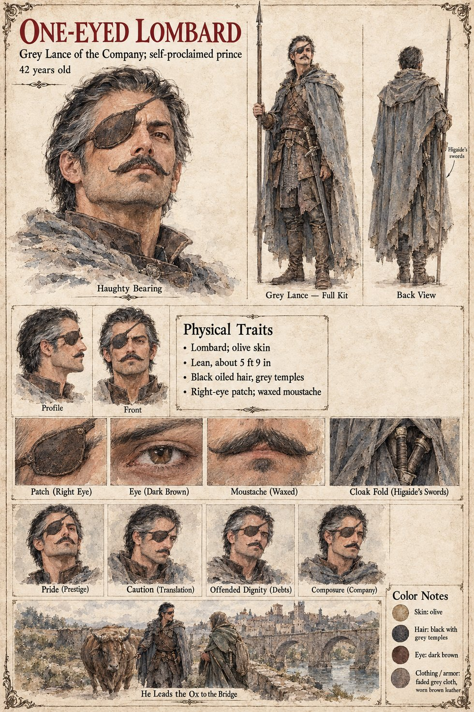

One-eyed Lombard
Grey Lance of the Company · self-proclaimed prince · Lombard · 42 years old by his sheet
A lean, olive-skinned Lombard of forty-two with oiled black hair going grey at the temples, a patch over his right eye and a waxed moustache, who is a lance of the Company and calls himself a prince: his sheet's subtitle is Grey Lance of the Company; self-proclaimed prince. The Company is the Grey Lances of Hagen Brandt, the mercenary company of eighty whose clerk is Wido and whose sergeant is Ragnulf. The detail that ties him to the stranger is on the cloak: a close-up captioned Cloak Fold (Higaide's Swords) draws two sword-hilts under the grey cloth, and the back view marks them Higaide's swords. Tomobe no Higaide is the foreigner with two swords whom Carter's Wife sees wrapped in sacking and whom Wido enters on the roll as Higa and idem. The publication notes have him translate between the Company and Higaide with a little Latin; neither they nor the sheet say why he carries the swords.
His expression panels run Pride (Prestige), Caution (Translation), Offended Dignity (Debts) and Composure (Company). His last scene is captioned He Leads the Ox to the Bridge and draws him walking a brown ox on a lead beside a cloaked figure, a long arched bridge and a walled town ahead; the sheet does not name the ox, and the publication notes say only that he leads the ox down to the bridge, so it is presumably Brun. The notes add that at ninety he is found to have been a younger son of a minor house (Epilogue iii). Written from the sheet, from what the other Case 4181 pages already say, and from the character notes in the case's publication-prep file; the manuscript itself was not to hand. His age of 42, Lombard origin, olive skin, lean build of about 5 ft 9 in, dark brown eye, faded grey cloak and worn brown leather are the sheet's own.